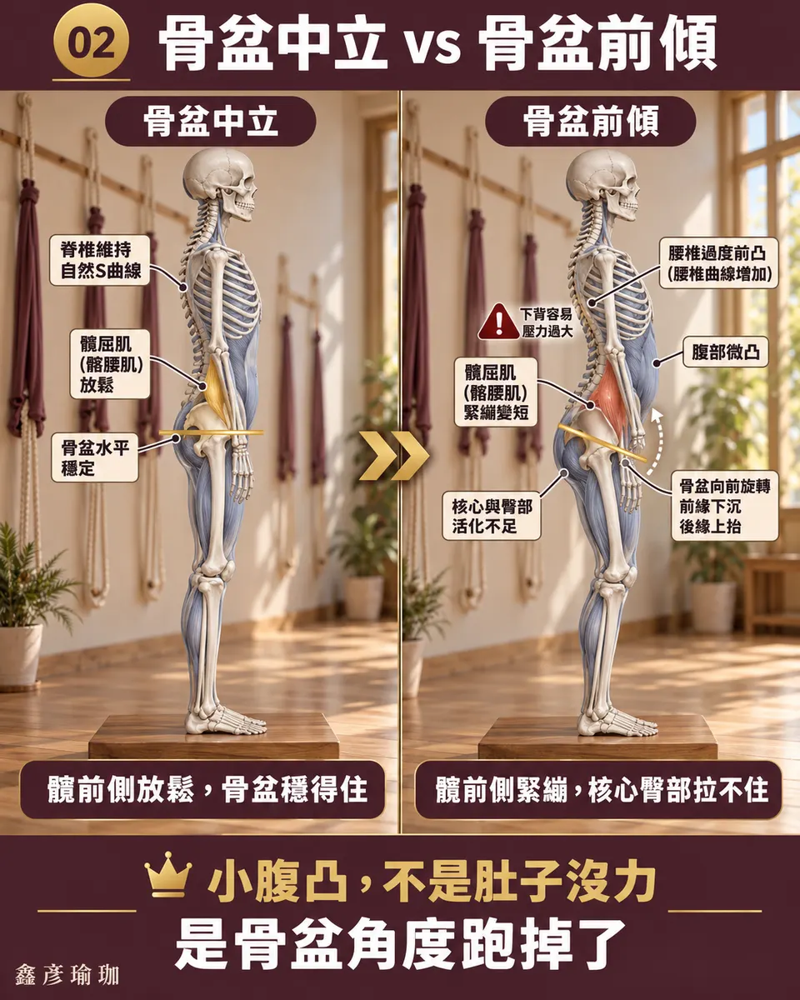
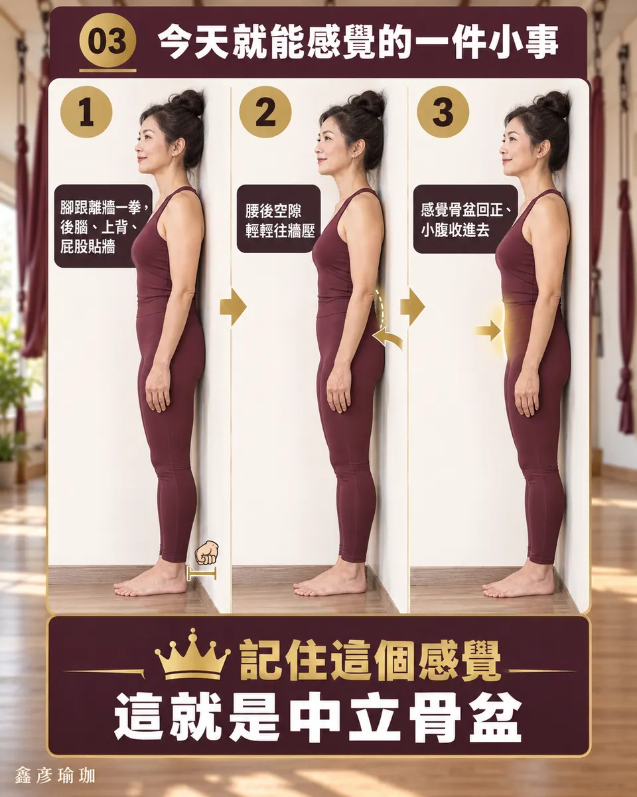

骨盆前傾就等於小腹凸？先看懂骨盆位置與核心用力的真實關係
早上穿好褲子，在鏡前把小腹收了一次，走到捷運站卻發現腰背比平常更在用力。到了下班，只想鬆開皮帶坐下來。
骨盆前傾描述骨盆的方向，小腹外觀也受呼吸、腹壁與拍攝角度影響。刻意縮腹或挺胸時，有些人會多用腰背維持站姿。靠近牆自然站約 10 秒，比較平常站法與刻意收腹的感受。牆距或單張照片不能判定姿勢異常、核心肌力或腰痠原因。
骨盆前傾就等於小腹凸嗎？
教室觀察。教室常比較自然站立和刻意收腹時，腰、肋骨與呼吸有沒有跟著改變。
一般運動衛教。靜態排列因人而異，也會隨動作、呼吸和量測方式變動，單一角度無法解釋疼痛。

靠牆觀察骨盆時，要把腰貼平嗎？
👆 手機可左右滑動
| 看到的狀況 | 可以怎麼觀察 | 無法據此判定 |
|---|---|---|
| 腰背與牆有空隙 | 放鬆下巴，正常呼吸，記下自然站姿的感覺。 | 固定的異常角度 |
| 一收腹就憋氣 | 先放掉多餘用力，比較自然吐氣時的感受。 | 核心肌力不足 |
| 往後坐時腰先拱 | 縮小髖往後的幅度，比較起始與結束的位置。 | 站姿骨盆前傾的成因 |
四足跪姿往後坐，先動的是腰還是髖？
影片文字摘錄（畫面）
畫面對照四足跪姿臀部往後移動時，腰背先拱起和腰背變化較小的兩種做法。這段用來辨認腰與髖的動作順序，不能測量站姿骨盆傾角。
若動作引起明顯疼痛、麻木或突然無力，先停止練習。症狀持續或加劇時，請尋求醫療評估。

常見問題
骨盆前傾真的就等於小腹凸嗎？
小腹外觀受到多項條件影響，不能單看外觀判定骨盆前傾。
為什麼長時間久坐容易出現骨盆前傾的傾向？
久坐後的感受與站姿不一定相同，不能從坐姿習慣推斷骨盆角度。
為什麼用力縮小腹或狂做仰臥起坐往往沒有改善？
收腹會暫時改變外觀與用力方式，是否需要練習要看實際動作目標。
壁繩瑜伽如何協助骨盆回到較平衡的中立排列？
支點能改變對同一動作的感受，不能保證改變靜態骨盆角度。
在家靠牆練習骨盆中立感，有什麼注意事項？
自然呼吸，不用將腰貼平，也不用設定固定牆距。
想把剛才的觀察整理成下一步？開始免費體態訊號掃描，從最困擾的日常動作填起。